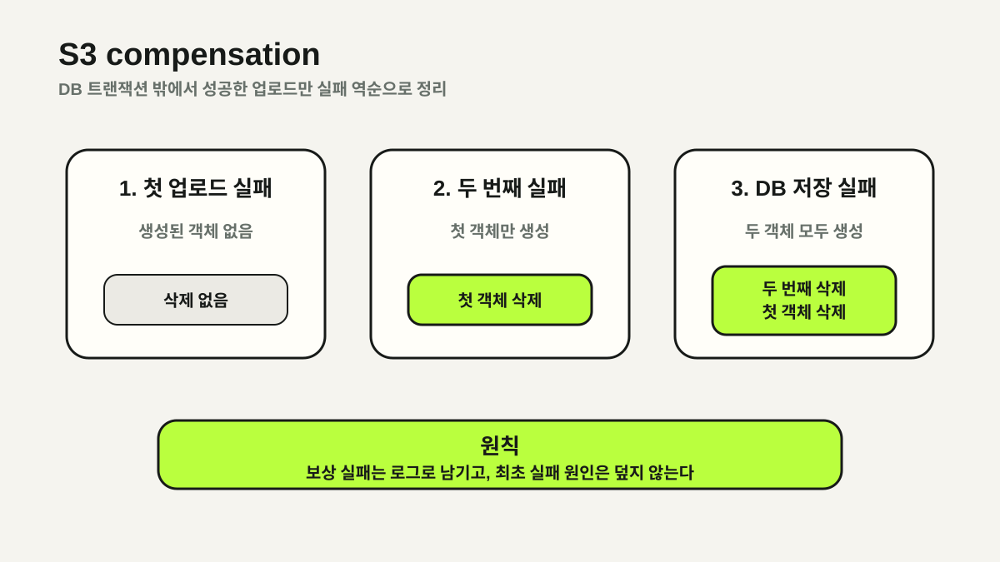

하나의 요청과 두 개의 저장소
관리자가 대학을 생성할 때 로고와 배경 이미지를 먼저 S3에 업로드하고, 그 URL을 대학 정보와 함께 DB에 저장합니다. 사용자에게는 하나의 작업이지만 S3와 RDB는 같은 트랜잭션에 참여하지 않습니다.
로고 업로드는 성공했는데 배경 업로드나 DB 저장이 실패하면 DB는 롤백되어도 S3 객체는 남습니다. 반대로 클라이언트가 이미지 업로드와 대학 생성 API를 따로 호출하면 실패 순서와 정리 책임까지 클라이언트가 알아야 했습니다.
@Transactional은 DB 변경만 되돌립니다. 외부 저장소에 생긴 부수 효과는 애플리케이션이 별도로 복구해야 합니다.대학 생성 유스케이스로 업로드 책임 통합
대학 생성·수정 API가 JSON과 이미지 파일을 multipart/form-data로 함께 받도록 변경했습니다. 클라이언트가 이미지 URL을 직접 전달하는 필드는 제거하고, 서버가 파일 검증·업로드·URL 저장을 한 흐름에서 관리합니다.
- 생성: 로고와 배경 이미지를 필수로 업로드한 뒤 대학 정보 저장
- 수정: 전달된 이미지만 새로 업로드하고, 파일이 없으면 기존 URL 유지
- 서버가 생성한 URL만 DB에 저장해 임의 URL과 잘못된 경로 유입 방지
서비스의 결합도는 조금 커지지만 이미지 업로드가 대학 관리에 종속된 작업이라는 사실을 코드에 그대로 드러내는 쪽을 선택했습니다.
실패 역순의 보상 삭제
업로드 결과를 로컬 변수에 순서대로 기록하고, 이후 단계에서 예외가 발생하면 이미 생성된 객체만 삭제합니다. 로고 업로드 후 배경 업로드가 실패해도 로고가 정리되고, DB 제약 위반이 발생해도 두 이미지가 정리됩니다.
UploadedFile logo = null;
UploadedFile background = null;
try {
logo = upload(logoFile);
background = upload(backgroundFile);
return repository.saveAndFlush(university);
} catch (RuntimeException original) {
deleteQuietly(logo);
deleteQuietly(background);
throw original;
}saveAndFlush와 flush를 사용해 DB 제약 위반이 보상 범위 안에서 드러나도록 했습니다. 메서드가 정상 종료된 뒤 트랜잭션 커밋 시점에 실패하면 서비스의 catch 블록이 실행되지 않을 수 있기 때문입니다.

공개 URL과 삭제 키 분리
리사이즈 대상 이미지는 DB와 클라이언트에 전달하는 URL이 실제 원본 업로드 키와 다를 수 있습니다. 호출부가 URL에서 S3 key를 역산하면 저장 정책이 바뀔 때마다 함께 수정되어야 합니다.
따라서 업로드 결과가 fileUrl과 내부용 deletionKey를 함께 갖도록 했습니다. deletionKey는 JSON 응답에서 숨기고, 삭제는 S3 서비스가 이 키를 사용해 처리합니다.
record UploadedFile(
String fileUrl,
@JsonIgnore String deletionKey
) {}표시용 식별자와 작업용 식별자를 나누면서 호출부는 S3 경로 정책을 알 필요가 없어졌습니다.
읽기 좋은 경로와 유일한 경로의 균형
대학 영문명을 소문자·공백 치환·특수문자 제거 규칙으로 slug화하면 읽기 좋은 디렉터리를 만들 수 있습니다. 하지만 정규화는 손실 변환이므로 서로 다른 이름이 같은 slug가 될 수 있고, 영문명 자체도 유일하지 않을 수 있습니다.
디렉터리 prefix는 영문 slug를 유지하되, unique 제약이 있는 한글명의 해시를 suffix로 사용했습니다. 사람이 알아보기 쉬운 경로와 충돌 회피를 함께 얻기 위한 선택입니다.
directory = slug(englishName)
+ "_"
+ shortHash(uniqueKoreanName);완전한 트랜잭션이 아닌 보상 로직
보상 삭제가 실패하면 원래 예외를 덮지 않고 warn 로그만 남깁니다. 실제 장애 원인을 보존하는 대신 남은 객체는 관측과 후속 정리의 대상으로 취급합니다.
- 기존 이미지 교체 후 old image 삭제는 DB 커밋 이후 처리해야 하므로 별도 과제로 분리
- 이름 변경만으로 기존 S3 객체를 이동하지 않음
- 비동기 업로드 내부 실패까지 DB 트랜잭션과 완전히 묶을 수는 없음
- 장기적으로 orphan 객체 탐지와 재처리 정책이 필요
이번 설계의 목표는 분산 트랜잭션을 흉내 내는 것이 아니라, 우리가 제어할 수 있는 실패 구간을 명시하고 복구 가능성을 높이는 것이었습니다.
NEXT POSTCCTV 밀도를 최단 경로의 간선 비용으로 바꾸기 →